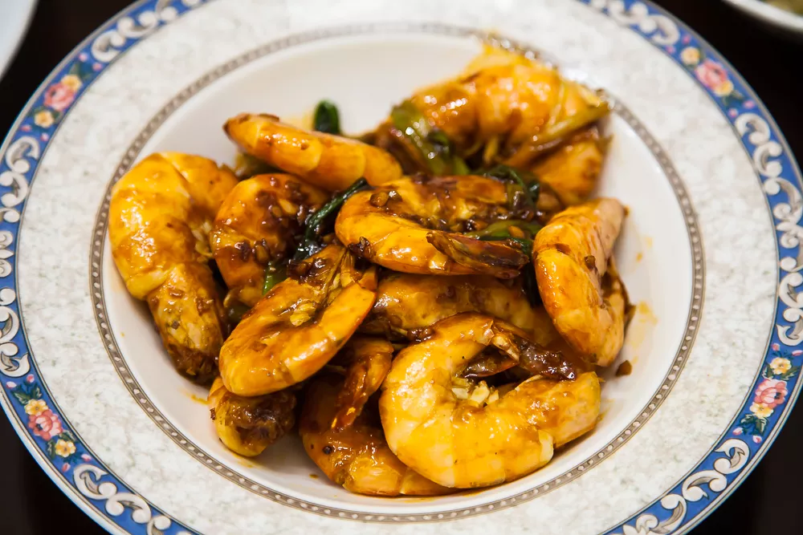

Braised Prawn

Description
Braised Prawn is another famous dish from China's Shangdong province, where the dishes are known as Lu cuisine. This dish
uses a specific cooking technique in which the main ingredient is first stir fried or deep fried then braised with a flavorful sauce for a short time under medium or low heat.
The sauce used to braise the prawns adds both savory and sweetness to the already fragrant prawns, making them even more delicious and juicy.
Ingredients
- ~1 lb (or 450g) of head-on prawn or large shrimp
- 2 tablespoons vegetable oil
- 3 green onions
- 1 1-inch long piece of ginger
- 1 tablespoon Chinese cooking wine or rice wine
- 2 teaspoons sugar
- 1 tablespoon light soy sauce
- 1 tablespoon water
Recipe Instructions
- Gather all the ingredients. Cut the green onions into long slices and mince the ginger then set aside.
Mix the 2 teaspoons of sugar, the 1 tablespoon of light soy sauce, and the 1 tablespoon of water then side aside.
- Clean the prawn/shrimp. Wash the prawn/shrimp gently and pat them dry with a kitchen paper towel.
Use kitchen scissors to remove the shrimp's antenna and legs.
Then make a slanted cut to remove majority of the head, except the hepatopancreas, which is the orange/tan color inside the head (see pictures).
If after making the cut, there is still some small black parts remaining in the head (the black part is the stomach, which is connected to the vein all the way to the tail), use a toothpick to pluck it out.
Then insert a toothpick into the gap between 2nd and 3rd tail section from the end to remove the prawn/shrimp's vein.
- Heat a large skillet or wok under medium-high heat. When the pan is getting hot, add the 2 tablespoons of vegetable oil and then immediately add the prawn/shrimp.
Flip after about 30 seconds or when the color has turned pink. Once both sides are pink, toss and stir the prawn/shrimp a few times to help release the”red oil” from the head.
- Once “red oil” is present, add the 1 tablespoon of Chinese cooking wine or rice wine.
Then add the sliced green onions and minced ginger, tossing and stirring to combine everything (about 30 seconds).
At this time, turn the heat to medium-low. Add the sauce prepared in step 1 (2 Tsp of sugar, 1 Tbsp of soy sauce, and 1 Tbsp of water) and keep flipping and tossing until the sauce has become thick,
giving a glossy appearance to the prawn/shrimp. Turn off the heat and serve the shrimp in a large plate.